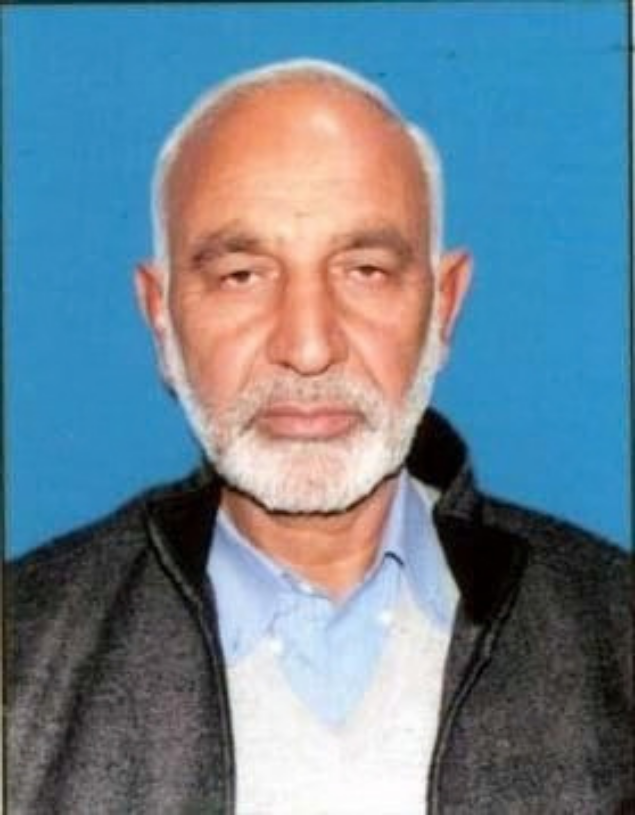

From the President's Pen
Abdul Rashid Bhat · Chairman / President
It gives me immense pleasure to present the profile of Bhat Foundation Welfare Society; an organization committed to serving humanity and working for the welfare of underprivileged and vulnerable communities in Srinagar, Jammu and Kashmir.
Since its establishment, our organization has continuously worked towards creating positive social change through healthcare awareness, education support, youth development, women empowerment, relief assistance, and community welfare programmes. We strongly believe that real development begins at the grassroots level, where compassion, awareness, and collective efforts can transform lives and build stronger communities.
Our mission is not only to provide support to those in need but also to empower individuals with opportunities, awareness, and hope for a better future. Through free medical camps, awareness campaigns, educational initiatives, and social welfare activities, we strive to make a meaningful difference in society.
I sincerely thank our dedicated team members, volunteers, supporters, community leaders, and well-wishers who continue to stand with us in this journey of social service and humanitarian work. We remain committed to transparency, inclusiveness, accountability, and sustainable development.